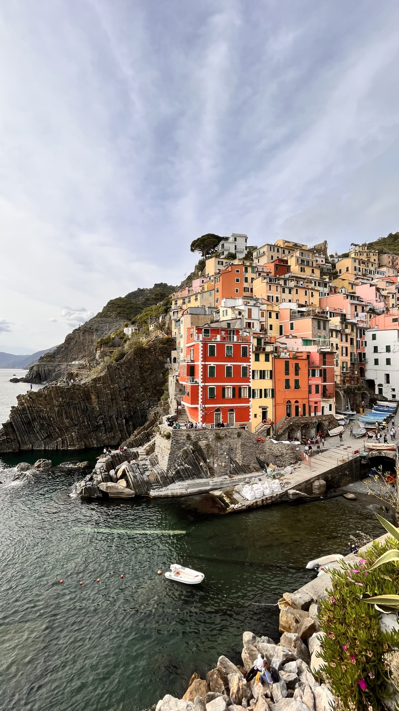

Mijn top 3 favoriete locaties in Europa
Tijdens de reis zijn we langs heel veel leuke plekken gekomen. Ik heb een top 3 gemaakt van mijn favoriete locaties waar ik langs ben gekomen gedurende de reis:
- Riomaggiore
- Alpes des Chaux
- Sevilla
Riomaggiore
Riomaggiore, een van de vijf betoverende dorpen die deel uitmaken van de Cinque Terre aan de Italiaanse kust, is als een ansichtkaart die tot leven komt. Gelegen in de regio Ligurië, biedt dit schilderachtige dorp een adembenemend uitzicht op de azuurblauwe Middellandse Zee en de dramatische kliffen die de kustlijn sieren.
Riomaggiore wordt gekenmerkt door zijn kleurrijke huizen die tegen de heuvels lijken te zijn geplakt en smalle geplaveide straatjes die zich een weg banen door het dorp. De haven is het centrale punt, waar vissersboten schommelen op het ritme van de golven en waar u kunt genieten van verse zeevruchten in de gezellige restaurants aan het water.
Wandelaars en natuurliefhebbers worden aangetrokken door de beroemde wandelroute, de Via dell'Amore, die Riomaggiore verbindt met de naburige dorpen en spectaculaire uitzichten biedt op de kliffen en de zee. 's Avonds wordt het dorp verlicht door de warme gloed van straatlantaarns, wat een romantische sfeer creëert die perfect is voor een ontspannen avondwandeling.
Riomaggiore is een juweeltje aan de Italiaanse kust, waar de tijd lijkt stil te staan en waar de schoonheid van de natuur naadloos samengaat met de charme van een vissersdorp. Het is een bestemming die reizigers keer op keer betovert en inspireert.
